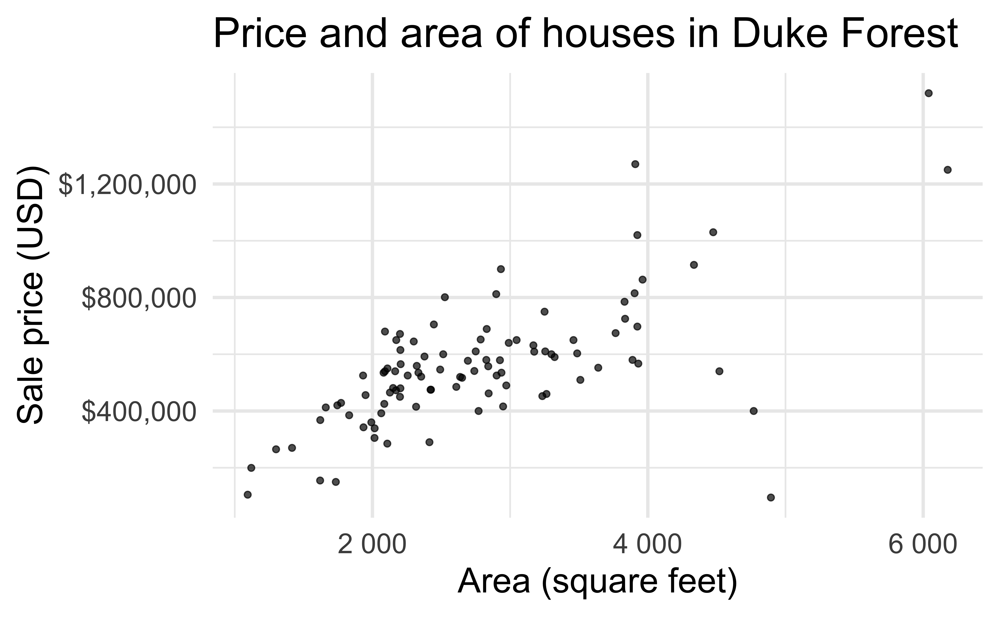
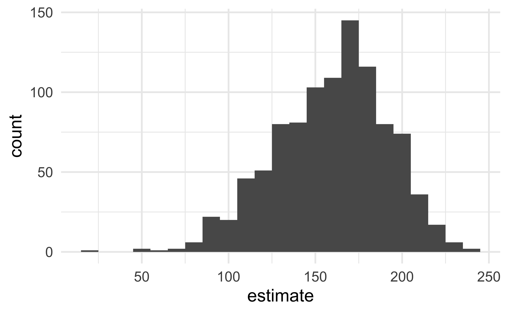
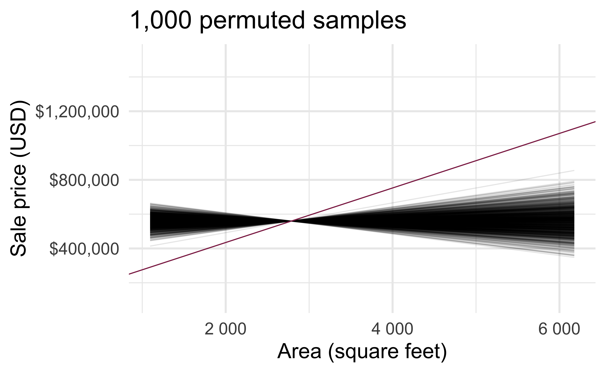
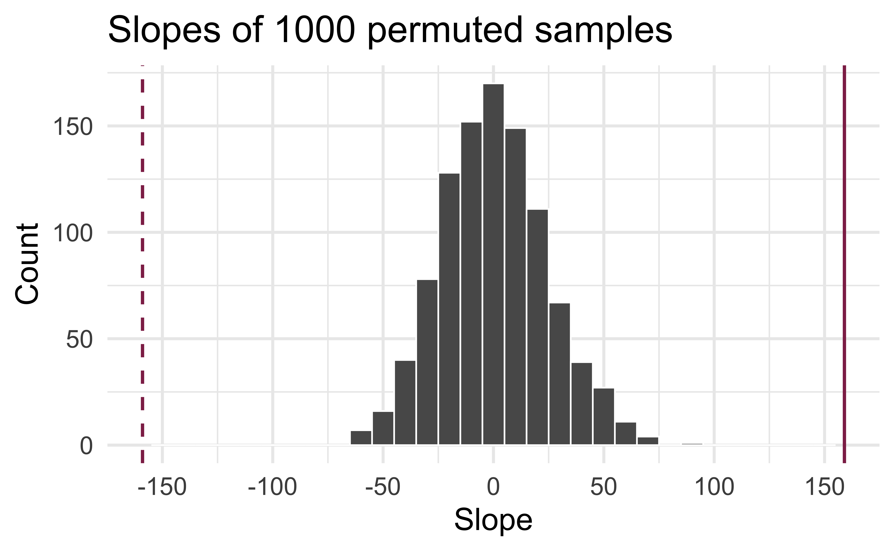
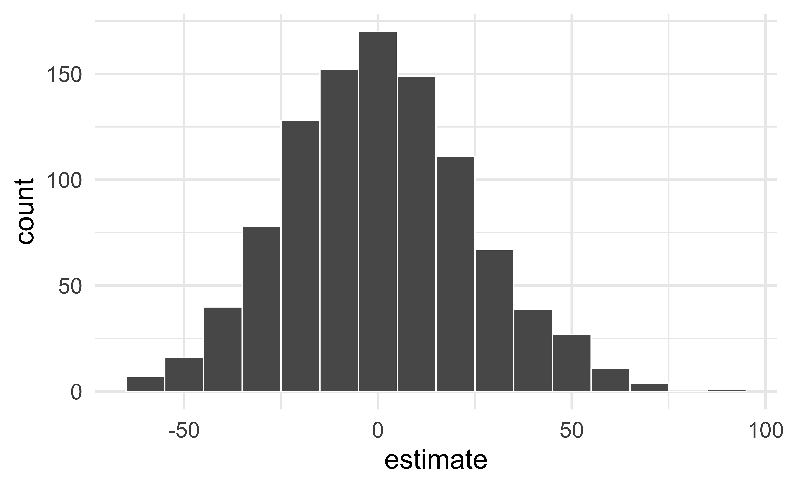
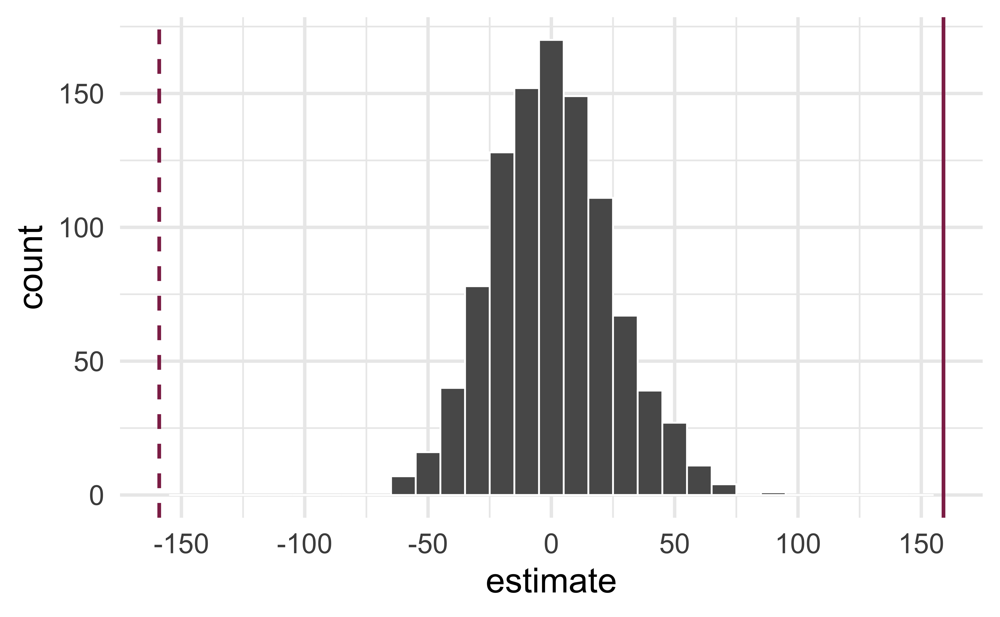

# load packages
library(tidyverse) # for data wrangling and visualization
library(tidymodels) # for modeling
library(openintro) # for the duke_forest dataset
library(scales) # for pretty axis labels
library(knitr) # for pretty tables
library(kableExtra) # also for pretty tables
# set default theme and larger font size for ggplot2
ggplot2::theme_set(ggplot2::theme_minimal(base_size = 20))SLR: Mathematical models for inference
STA 210 - Spring 2022
Welcome
Computational setup
Recap of last lecture
Data: Duke Forest houses

The regression model
df_fit <- linear_reg() %>%
set_engine("lm") %>%
fit(price ~ area, data = duke_forest)
tidy(df_fit) %>%
kable(digits = 2)| term | estimate | std.error | statistic | p.value |
|---|---|---|---|---|
| (Intercept) | 116652.33 | 53302.46 | 2.19 | 0.03 |
| area | 159.48 | 18.17 | 8.78 | 0.00 |
. . .
- Intercept: Duke Forest houses that are 0 square feet are expected to sell, on average, for $116,652.
- Slope: For each additional square foot, the model predicts the sale price of Duke Forest houses to be higher, on average, by $159.
Inference for simple linear regression
Calculate a confidence interval for the slope, \(\beta_1\)
Conduct a hypothesis test for the interval, \(\beta_1\)
Confidence interval via bootstrapping
- Bootstrap new samples from the original sample
- Fit models to each of the samples and estimate the slope
- Use features of the distribution of the bootstrapped slopes to construct a confidence interval
Bootstrapping pipeline I
# #| code-line-numbers: "|1|3|4"
#|
set.seed(119)
duke_forest %>%
specify(price ~ area)Response: price (numeric)
Explanatory: area (numeric)
# A tibble: 98 × 2
price area
<dbl> <dbl>
1 1520000 6040
2 1030000 4475
3 420000 1745
4 680000 2091
5 428500 1772
6 456000 1950
7 1270000 3909
8 557450 2841
9 697500 3924
10 650000 2173
# … with 88 more rowsBootstrapping pipeline II
# #| code-line-numbers: "|5"
set.seed(119)
duke_forest %>%
specify(price ~ area) %>%
generate(reps = 1000, type = "bootstrap")Response: price (numeric)
Explanatory: area (numeric)
# A tibble: 98,000 × 3
# Groups: replicate [1,000]
replicate price area
<int> <dbl> <dbl>
1 1 535000 2334
2 1 520000 2637
3 1 540000 2165
4 1 155000 1620
5 1 567000 3931
6 1 420000 1745
7 1 400000 4769
8 1 579000 2926
9 1 615000 2203
10 1 1030000 4475
# … with 97,990 more rowsBootstrapping pipeline III
# #| code-line-numbers: "|6"
set.seed(119)
duke_forest %>%
specify(price ~ area) %>%
generate(reps = 1000, type = "bootstrap") %>%
fit()# A tibble: 2,000 × 3
# Groups: replicate [1,000]
replicate term estimate
<int> <chr> <dbl>
1 1 intercept 200401.
2 1 area 122.
3 2 intercept 120000.
4 2 area 156.
5 3 intercept 190879.
6 3 area 126.
7 4 intercept 206842.
8 4 area 127.
9 5 intercept 211231.
10 5 area 124.
# … with 1,990 more rowsBootstrapping pipeline IV
# #| code-line-numbers: "|3"
set.seed(119)
boot_dist <- duke_forest %>%
specify(price ~ area) %>%
generate(reps = 1000, type = "bootstrap") %>%
fit()Visualize the bootstrap distribution
# #| code-line-numbers: "|2"
boot_dist %>%
filter(term == "area") %>%
ggplot(aes(x = estimate)) +
geom_histogram(binwidth = 10)
Compute the CI
Two methods:
- Percentile method
- Standard error method

But first…
obs_fit <- duke_forest %>%
specify(price ~ area) %>%
fit()
obs_fit# A tibble: 2 × 2
term estimate
<chr> <dbl>
1 intercept 116652.
2 area 159.Percentile method
# #| code-line-numbers: "|4"
boot_dist %>%
get_confidence_interval(
level = 0.95,
type = "percentile",
point_estimate = obs_fit
)# A tibble: 2 × 3
term lower_ci upper_ci
<chr> <dbl> <dbl>
1 area 91.0 215.
2 intercept -22046. 289004.Standard error method
# #| code-line-numbers: "|4"
boot_dist %>%
get_confidence_interval(
level = 0.95,
type = "se",
point_estimate = obs_fit
)# A tibble: 2 × 3
term lower_ci upper_ci
<chr> <dbl> <dbl>
1 area 96.1 223.
2 intercept -39805. 273109.Hypothesis test for the slope
Research question and hypotheses
- “Do the data provide sufficient evidence that \(\beta_1\) (the true slope for the population) is different from 0?”
- Null hypothesis - \(H_0: \beta_1 = 0\), there is no linear relationship between
areaandprice - Alternative hypothesis - \(H_A: \beta_1 \ne 0\), there is a linear relationship between
areaandprice
Hypothesis testing framework
- Start with a null hypothesis, \(H_0\) that represents the status quo
- Set an alternative hypothesis, \(H_A\) that represents the research question, i.e. what we’re testing for
- Conduct a hypothesis test under the assumption that the null hypothesis is true and calculate a p-value (probability of observed or more extreme outcome given that the null hypothesis is true)
- if the test results suggest that the data do not provide convincing evidence for the alternative hypothesis, stick with the null hypothesis
- if they do, then reject the null hypothesis in favor of the alternative
Quantify the variability of the slope
for testing
- Two approaches:
- Via simulation (what we’ll review from lab)
- Via mathematical models (what we’ll cover in the remainder of class)
- Randomizing to quantify the variability of the slope for the purpose of testing, under the assumption that the null hypothesis is true:
- Simulate new samples from the original sample via permutation
- Fit models to each of the samples and estimate the slope
- Use features of the distribution of the permuted slopes to conduct a hypothesis test
Permutation, described
- Set the null hypothesis to be true, and measure the natural variability in the data due to sampling but not due to variables being correlated by permuting permute one variable to eliminate any existing relationship between the variables
- Each
pricevalue is randomly assigned toareaof a given house, i.e.areaandpriceare no longer matched for a given house
# A tibble: 98 × 3
price_Observed price_Permuted area
<dbl> <dbl> <dbl>
1 1520000 342500 6040
2 1030000 750000 4475
3 420000 645000 1745
4 680000 697500 2091
5 428500 428500 1772
6 456000 481000 1950
7 1270000 610000 3909
8 557450 680000 2841
9 697500 485000 3924
10 650000 105000 2173
# … with 88 more rowsPermutation, visualized
- Each of the observed values for
area(and forprice) exist in both the observed data plot as well as the permutedpriceplot - The permutation removes the linear relationship between
areaandprice

Permutation, repeated
Repeated permutations allow for quantifying the variability in the slope under the condition that there is no linear relationship (i.e., that the null hypothesis is true)

Concluding the hypothesis test
Is the observed slope of \(\hat{\beta_1} = 159\) (or an even more extreme slope) a likely outcome under the null hypothesis that \(\beta = 0\)? What does this mean for our original question: “Do the data provide sufficient evidence that \(\beta_1\) (the true slope for the population) is different from 0?”

Permutation pipeline I
# #| code-line-numbers: "|1|3|4"
#|
set.seed(1125)
duke_forest %>%
specify(price ~ area)Response: price (numeric)
Explanatory: area (numeric)
# A tibble: 98 × 2
price area
<dbl> <dbl>
1 1520000 6040
2 1030000 4475
3 420000 1745
4 680000 2091
5 428500 1772
6 456000 1950
7 1270000 3909
8 557450 2841
9 697500 3924
10 650000 2173
# … with 88 more rowsPermutation pipeline II
# #| code-line-numbers: "|5"
set.seed(1125)
duke_forest %>%
specify(price ~ area) %>%
hypothesize(null = "independence")Response: price (numeric)
Explanatory: area (numeric)
Null Hypothesis: independence
# A tibble: 98 × 2
price area
<dbl> <dbl>
1 1520000 6040
2 1030000 4475
3 420000 1745
4 680000 2091
5 428500 1772
6 456000 1950
7 1270000 3909
8 557450 2841
9 697500 3924
10 650000 2173
# … with 88 more rowsPermutation pipeline III
# #| code-line-numbers: "|6"
set.seed(1125)
duke_forest %>%
specify(price ~ area) %>%
hypothesize(null = "independence") %>%
generate(reps = 1000, type = "permute")Response: price (numeric)
Explanatory: area (numeric)
Null Hypothesis: independence
# A tibble: 98,000 × 3
# Groups: replicate [1,000]
price area replicate
<dbl> <dbl> <int>
1 465000 6040 1
2 481000 4475 1
3 1020000 1745 1
4 520000 2091 1
5 592000 1772 1
6 650000 1950 1
7 473000 3909 1
8 705000 2841 1
9 785000 3924 1
10 671500 2173 1
# … with 97,990 more rowsPermutation pipeline IV
# #| code-line-numbers: "|7"
set.seed(1125)
duke_forest %>%
specify(price ~ area) %>%
hypothesize(null = "independence") %>%
generate(reps = 1000, type = "permute") %>%
fit()# A tibble: 2,000 × 3
# Groups: replicate [1,000]
replicate term estimate
<int> <chr> <dbl>
1 1 intercept 553355.
2 1 area 2.35
3 2 intercept 635824.
4 2 area -27.3
5 3 intercept 536072.
6 3 area 8.57
7 4 intercept 598649.
8 4 area -13.9
9 5 intercept 556202.
10 5 area 1.33
# … with 1,990 more rowsPermutation pipeline V
# #| code-line-numbers: "|3"
set.seed(1125)
null_dist <- duke_forest %>%
specify(price ~ area) %>%
hypothesize(null = "independence") %>%
generate(reps = 1000, type = "permute") %>%
fit()Visualize the null distribution
# #| code-line-numbers: "|2"
null_dist %>%
filter(term == "area") %>%
ggplot(aes(x = estimate)) +
geom_histogram(binwidth = 10, color = "white")
Reason around the p-value
In a world where the there is no relationship between the area of a Duke Forest house and in its price (\(\beta_1 = 0\)), what is the probability that we observe a sample of 98 houses where the slope fo the model predicting price from area is 159 or even more extreme?

Compute the p-value
What does this warning mean?
get_p_value(
null_dist,
obs_stat = obs_fit,
direction = "two-sided"
)Warning: Please be cautious in reporting a p-value of 0. This result is an
approximation based on the number of `reps` chosen in the `generate()` step. See
`?get_p_value()` for more information.
Warning: Please be cautious in reporting a p-value of 0. This result is an
approximation based on the number of `reps` chosen in the `generate()` step. See
`?get_p_value()` for more information.# A tibble: 2 × 2
term p_value
<chr> <dbl>
1 area 0
2 intercept 0Mathematical models for inference
The regression model, revisited
df_fit <- linear_reg() %>%
set_engine("lm") %>%
fit(price ~ area, data = duke_forest)
tidy(df_fit) %>%
kable(digits = 3)| term | estimate | std.error | statistic | p.value |
|---|---|---|---|---|
| (Intercept) | 116652.325 | 53302.463 | 2.188 | 0.031 |
| area | 159.483 | 18.171 | 8.777 | 0.000 |
HT and CI, recapped
Hypothesis test:
- Do the data provide sufficient evidence that \(\beta_1\) (the true slope for the population) is different from 0?
- Null hypothesis - \(H_0: \beta_1 = 0\), there is no linear relationship between
areaandprice. - Alternative hypothesis - \(H_A: \beta_1 \ne 0\), there is a linear relationship between
areaandprice.
Confidence interval: Provide a plausible range of values for \(\beta_1\) at a given confidence level.
HT and CI, revisited
- Earlier we computed a CI and conducted a HT via simulation:
- CI: Bootstrap the observed sample to simulate the distribution of the slope
- HT: Permute the observed sample to simulate the distribution of the slope under the assumption that the null hypothesis is true
- Now we’ll do these based on theoretical results, i.e., by using the Central Limit Theorem to define the distribution of the slope and use features (shape, center, spread) of this distribution to compute bounds of the CI and the p-value for the HT
Mathematical representation of the model
\[ \begin{aligned} Y &= Model + Error \\ &= f(X) + \epsilon \\ &= \mu_{Y|X} + \epsilon \\ &= \beta_0 + \beta_1 X + \epsilon \end{aligned} \]
where the errors are independent and normally distributed:
- independent: Knowing the error term for one observation doesn’t tell you anything about the error term for another observation
- normally distributed: \(\epsilon \sim N(0, \sigma_\epsilon^2)\)
Mathematical representation, visualized
\[ Y|X \sim N(\beta_0 + \beta_1 X, \sigma_\epsilon^2) \]

- Mean: \(\beta_0 + \beta_1 X\), the predicted value based on the regression model
- Variance: \(\sigma_\epsilon^2\), constant across the range of \(X\)
- How do we estimate \(\sigma_\epsilon^2\)?
Regression standard error
Once we fit the model, we can use the residuals to estimate the regression standard error (the spread of the distribution of the response, for a given value of the predictor variable):
\[ \hat{\sigma}_\epsilon = \sqrt{\frac{\sum_\limits{i=1}^n(y_i - \hat{y}_i)^2}{n-2}} = \sqrt{\frac{\sum_\limits{i=1}^ne_i^2}{n-2}} \]
. . .
- Why divide by \(n - 2\)?
- Why do we care about the value of the regression standard error?
Standard error of \(\hat{\beta}_1\)
\[ SE_{\hat{\beta}_1} = \hat{\sigma}_\epsilon\sqrt{\frac{1}{(n-1)s_X^2}} \]
. . .
or…
| term | estimate | std.error | statistic | p.value |
|---|---|---|---|---|
| (Intercept) | 116652.33 | 53302.46 | 2.19 | 0.03 |
| area | 159.48 | 18.17 | 8.78 | 0.00 |